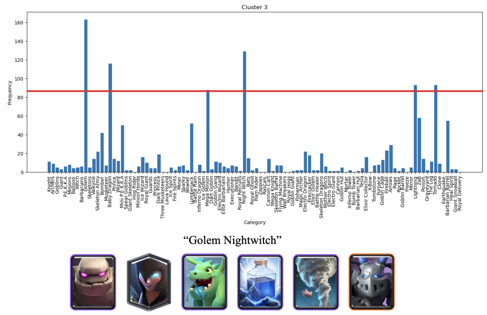

Results and Discussion
Visualizations[Image 1] DBScan Results Visualization
[Image 2] Hog 2.6
[Image 3] Strong Cards
[Image 4] Lavaloon
[Image 5] Golem Night Witch
[Image 6] PEKKA Bridge Spam
[Image 7] Log Bait

[Image 8] Splashyard
[Image 9] Silhouette Coefficients
[Image 10] Average Silhouette Score

[Image 11] GMM Results Visualization
[Image 12] Random Forest Train/Test Accuracies
[Image 13] Random Forest Depths
[Image 14] Random Forest Estimators
[Image 15] Random Forest Results
[Image 16] Neural Nets Train/Test Accuracies
[Image 17] Neural Nets (BCEWithLogitsLoss)
[Image 18] Neural Nets Results
 Quantitiative Metrics
Quantitiative Metrics
- Silhouette Coefficient: The Silhouette Coefficient measures how well a data point fits into its own cluster when compared to other clusters. The average Silhoutte Score for our data was 0.331 as seen by Image 10. Common deck archetypes such as Hog 2.6 [Image 2] and Log Bait [Image 7] had Silhouette Scores of 0.954 and 0.987 respectively. The high Silhouette Score is representative of our DBScan's strong performance. An interesting observation is that the cluster in [Image 3] had a lower Silhouette Score, being 0.341. This however makes sense as this cluster is formed by the eight most popular/strong cards at the time, meaning that though they had high usage rates across all decks, the combination of cards themselves didn't necessarily form a cohesive deck.
- Accuracy: To evaluate our our Neural Network and Random Forest, we just simply used accuracy. Since the classes are simply win or lose, we were able to see how many predictions were correct, whether it be win or lose. The results can be observed above with Images 15 and 18.
The way we determined our clusters is through thresholding. Naively, we can take the 8 most popular cards, but then we risk including cards that don't receive a lot of support. For instance, if 7 cards appear 100 times within a group, but the 8th most popular card appears 20 times, we should not include that card in our deck, and instead let the remaining cards be 'wildcards' meaning that those remaining cards vary a lot from deck to deck, but they aren't required to define that deck type. We can accomplish this by applying a frequency threshold and once the next most popular card falls below 75% of the previous frequency, we don't include any more cards in our current deck.
DB Scan performed well on our preprocessed dataset, as we were able to find and confirm every cluster's corresponding deck archetype with high Silhouette Scores.
Deeper Analysis of GMM:Our implementation of GMM was able to find 10 different clusters, representing 10 different deck archetypes from our dataset. After further inspection into the cards that made up each cluster, we were able to map real deck archetypes with each cluster of 8 cards that DBSCAN was able to detect We found GMM to be less successful in finding real deck archetypes when compared to our other clustering algorithm, DBSCAN. Our silhouette coefficient visualizations show that GMM was very confident when creating clusters of deck archetypes in our data. Each deck archetype generally had a silhouette coefficient that was larger than the average (except for the 2 clusters with only the 8 most common cards).
Although GMM was able to produce an overall higher silhouette coefficient than DBSCAN, overall it performed worse when finding real deck archetypes. Our GMM implementation found 2 clusters that only consisted of 1 card, which does not make a compelling argument for the effectiveness of its clustering. However, with the 4 real decks that GMM did find, GMM had an overall higher coefficient score for those clustering, which means that GMM used more tight clustering when determining classes. Similar to DBSCAN, GMM found 2 clusters that only consisted of the top 8 cards that were played during this time period in Clash Royale. In terms of trade-offs, since DBSCAN can detect arbitrary cluster shapes and noise, it should be preferred over GMM because GMM looks primarily for Gaussian/Elliptical cluster shapes and does not handle noise as well. Additionally, since our data was reduced down to just 2 features, DBSCAN should be preferred because of its better scalability for lower dimensional data. In our use case, we found DBSCAN to perform exceptionally better than GMM when finding real deck archetypes.
Deeper Analysis of Random Forest:To implement a random forest classifier, we first applied PCA to the data in order to reduce the impact of collinear dimensions. Collinear dimensions could occur in the data when multiple cards are either all used together or never used together, leading to one-hot encoding columns that are either always off or always on. This ends up being redundant, so PCA can reduce the unnecessary dimensionality for us. We then define a RF classifier. We iterated over multiple different choices for number of estimators and max depth per decision tree to find good hyperparameters for our model. We set a fixed value for max depth per estimator (5), and varied the number of estimators for the RF classifier. We then set a fixed value for the number of estimators (15), then varied the maximum depth per estimator. As seen in the graph above, test accuracy doesn’t seem to rise at all while training accuracy rises quickly with an increased depth. This means a higher depth puts the RF classifier at risk of overfitting on the training data at the cost of the testing data. To minimize overfitting we cap our maximum depth to 5. We hypothesize that the reason why our classifiers were not particularly accurate is because Clash Royale is a game where many factors matter besides player statistics and decks. When a player places their troops, how they cycle to the cards they want to play, and even player play-style can factor into who wins and who loses. Thus, looking solely at what decks two players use cannot paint an accurate picture of what factors go into a battle between those two players. This is in contrast to the other problem we address in this project (clustering players’ decks and determining meta decks). The only information necessary to identify a meta deck is the actual decks that players are using; thus, since we are able to provide this information to DBSCAN, we were able to accurately detect what decks were most popular.
Both methods (neural network and RF) had a maximum accuracy of about 56%. We hesitate to use metrics like precision, recall, and F1-score. Our binary labels do not correspond to an outcome happening or not happening, meaning that the concept of a false positive or false negative makes little sense in this context. The neural network seemed to incorrectly classify matches where player 1 won as matches where player 2 won a bit more often than vice versa. In contrast, the RF classifier often misclassified matches where player 2 won as matches where player 1 won, and did the opposite less often. The methods listed above achieved the best results from what we’ve tried. Some other approaches we considered for our neural network were using PCA before passing inputs to the neural network, changing the structure of the neural network (more layers, more hidden features per layer, different ratio for dropout), and changing hyperparameters like learning rate decay and starting learning rate. Some approaches we considered for our RF classifier were forgoing PCA, classifying on only player data or only one-hot encodings of cards, and using UMAP to reduce the dimensionality of the cards only and concatenating the result with the player data. None of these approaches achieved better success.
Deeper Analysis of Neural Network:To implement a neural network, we defined a simple sequential model with PyTorch, consisting of 4 hidden layers and 1 output layer. Each hidden layer uses dropout and the ReLU activation function. We simply trained the model off the entire training dataset (with no dimensionality reduction) over the course of a few thousand epochs. The way we determined our clusters is through thresholding. Naively, we can take the 8 most popular cards, but then we risk including cards that don't receive a lot of support. For instance, if 7 cards appear 100 times within a group, but the 8th most popular card appears 20 times, we should not include that card in our deck, and instead let the remaining cards be 'wildcards' meaning that those remaining cards vary a lot from deck to deck, but they aren't required to define that deck type. We can accomplish this by applying a frequency threshold and once the next most popular card falls below 75% of the previous frequency, we don't include any more cards in our current deck.
- For Next Steps, we plan to continue refining our implementation and perhaps looking into fine tuning the hyper parameters of our algorithm to find more specific deck clusters. Our largest cluster, cluster 0, is currently just the 8 most commonly played cards from 2021, meaning there is too much parity in the way our algorithm selects clusters. If we are able to detect more clusters, with high confidence, then we can find more popular or niche deck archetypes. We also intend on looking into Supervised methods.
- In this project, we are aiming to create models that will benefit the general Clash Royale player base. Detecting deck metas is paramount to creating a sustainable competitive experience. Additionally, we will consider ethical implications by hiding sensitive data and ensuring data protection.
- Find ways to improve battle prediction classification (Find additional features to pass to models, Investigate additional hyperparameters for NN and RF, Investigate other ways to do supervised learning altogether)
- Predicting accurate match outcomes, in accordance with how different decks counter each other. ( Recommending decks for players Finding what decks counter existing meta decks Splitting predictions based on player trophy count, arena, etc.)